J2 J2 — Mardi 23 juin 2026
📋 Spots du jour (2)
Spot 5 — MPP
📋 Vue d'ensemble — photos du spot
| ✓ | # | Titre | Statut | Focale |
|---|---|---|---|---|
| 5.1 | Tunnel d'accès extérieur + flash contre-jour télé compressé | ✅ ACTÉE | télé compression (à arbitrer 1 | |
| 5.2 | Tunnel ext variante sans flash | ✅ ACTÉE (variante diversificat | même angle que 5.1 | |
| 5.3 | Tunnel ext 35mm + flash mode grotte | ✅ ACTÉE | 35mm | |
| 5.4 | Tunnel ext grand angle à ras du sol 🟡 WIP | 🟡 WIP (2-3 angles à explorer) | — | |
| 5.5 | Façade MPP escalier rambarde | ✅ ACTÉE | à arbitrer terrain | |
| 5.6 | Tunnel intérieur bâtiment perspective + porte 🟡 WIP | 🟡 WIP (instinct Tristan : tunn | — |
📋 Brief spot (8 infos)
Horaire planning : ☀️ 23/06 10H00 → 13H00 (intérieur + ombre, lumière peu critique)
📍 Google Maps — MPP (Médiathèque du patrimoine et de la photographie)
📮 Fort de Saint-Cyr — 12-14 Rue du Fort de Saint-Cyr, 78390 Montigny-le-Bretonneux ✅ adresse confirmée Tristan
- Lumière : intérieur + ombre → peu critique horaire
- Status spot : ✅ ACTÉ — seul spot où la lumière n'est pas le héros
- Note importante : double session :
- 23/06 nous → avec flash, déboucher
- 1ʳᵉ semaine juillet équipe japonaise → re-shooter SANS flash, tethering ordi + démo performance ISO Fuji
- Flash : oui
- Repérage 21/06 avec Mathurin : ❌ Non — pas de repérage MPP avec Mathurin
🌅 Lecture lumière (1 image)
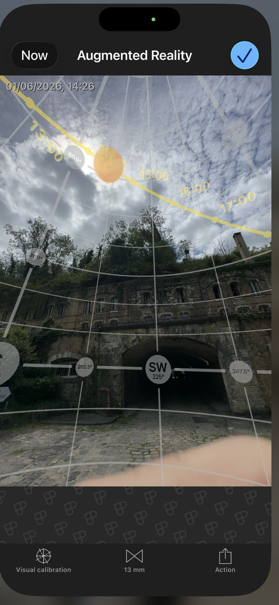
📷 Photo 5.1 — Tunnel d'accès extérieur + flash contre-jour télé compressé
- Tag : Beauty + Perf
- Statut : ✅ ACTÉE
- Focale : télé compression (à arbitrer 100-200mm)
- Flash : oui — contre-jour pour éclairer tout le tunnel
- Action Johan : backflip dans le tunnel
- Effet : compression télé + débouchage flash arrière
🖼️ Références 📷📷
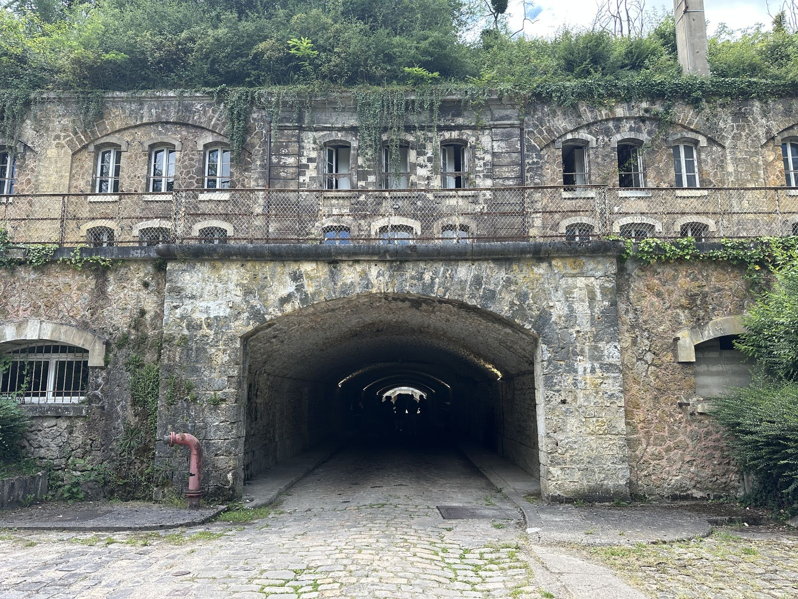 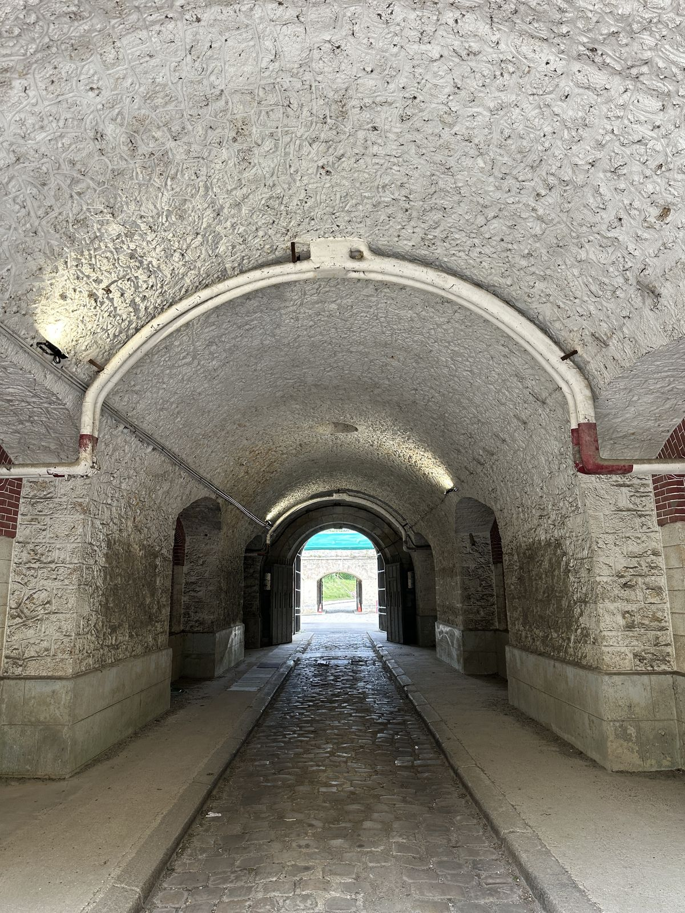 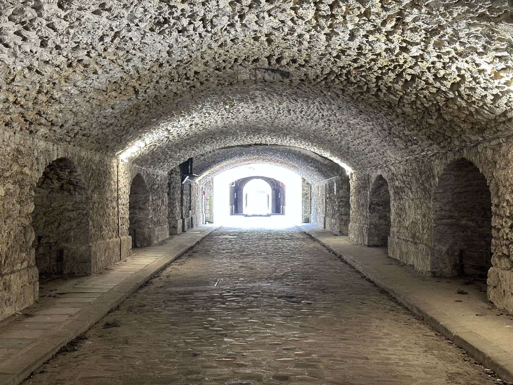
📷 Photo 5.2 — Tunnel ext variante sans flash
- Tag : Beauty
- Statut : ✅ ACTÉE (variante diversification série)
- Focale : même angle que 5.1
📷 Photo 5.3 — Tunnel ext 35mm + flash mode grotte
- Tag : Beauty (structure pierre)
- Statut : ✅ ACTÉE
- Focale : 35mm
- Flash : oui — « la structure de la pierre va chanter en mode grotte »
🖼️ Référence 📷
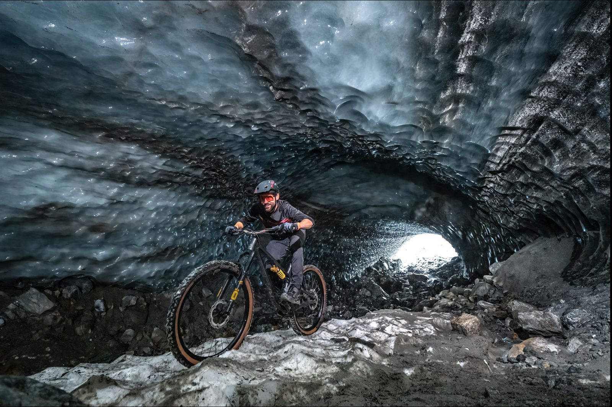
📷 Photo 5.4 — Tunnel ext grand angle à ras du sol 🟡 WIP
- Tag : Beauty (variation graphique)
- Statut : 🟡 WIP (2-3 angles à explorer)
📷 Photo 5.5 — Façade MPP escalier rambarde
- Tag : Beauty + Perf
- Statut : ✅ ACTÉE
- Composition : Johan en équilibre sur rambarde escalier façade MPP, Tristan shoot depuis dessous
- Flash : oui — débouchage obligatoire (tout sera à l'ombre)
- Focale : à arbitrer terrain
🖼️ Références 📷📷
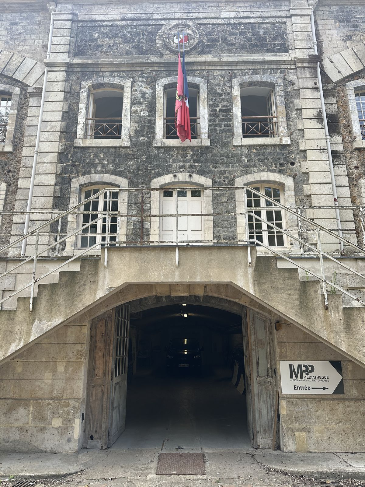 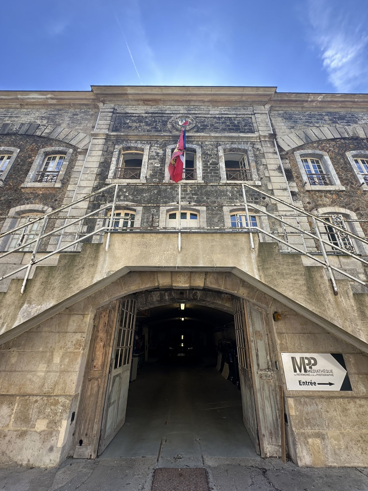
📷 Photo 5.6 — Tunnel intérieur bâtiment perspective + porte 🟡 WIP
- Tag : Beauty (variante)
- Statut : 🟡 WIP (instinct Tristan : tunnel ext > tunnel int, mais équipe vidéo voudra peut-être travailler là)
- Composition : perspective tunnel intérieur + porte qui s'ouvre vers extérieur
- Note : refaire/varier ce qu'on a fait dans tunnel extérieur
🖼️ Références 📷📷
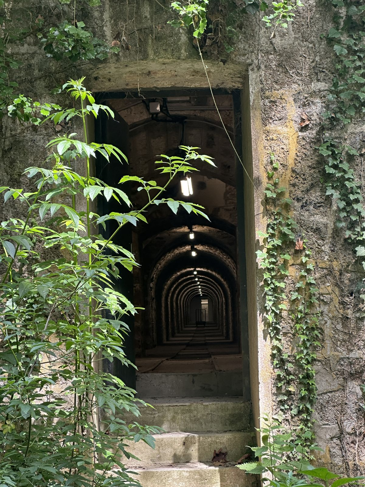 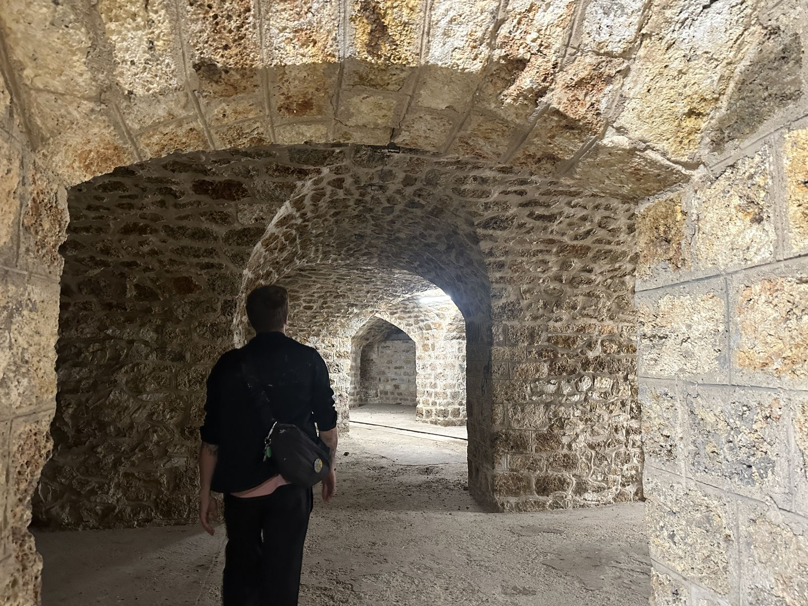
Récap MPP = 5-6 photos identifiées (tunnel ext × 3-4 variantes + escalier façade + tunnel int)
🔬 Note spéciale Tethering tests juillet
- Re-shoot équipe japonaise 1ʳᵉ semaine juillet = occasion de tester tethering ordinateur + démonstration performance ISO Fuji
- Pas de flash → montrer ce que le boîtier sait faire en lumière basse pure
- Workflow : trépied + ordi + tethering câble (pas wireless car contrôle qualité full)
Spot 6 — Garage Abbeville
📋 Vue d'ensemble — photos du spot
| ✓ | # | Titre | Statut | Focale |
|---|---|---|---|---|
| 6.1 | Silhouettes télé Tour Eiffel / Montmartre depuis sommet park | ✅ ACTÉE | téléobjectif (200mm+) | |
| 6.2 | Enchevêtrement de toits (transition vers toit face Tour Eiff | 🟡 WIP — décision Tristan à pre | — | |
| 6.3 | Saut dévers parking → boucle voitures | ✅ ACTÉE (2 axes) | grand angle |
📋 Brief spot (6 infos)
Horaire planning : 🌇 23/06 20H00 → 23H00 (coucher de soleil)
📍 Google Maps — Garage d'Abbeville
📮 9 Rue d'Abbeville, 75009 Paris (lien à reconfirmer terrain — pas fourni cycle 92)
- Lumière : 🔒 LOCKÉE coucher de soleil
- Status spot : ⚠️ Zone grise globale — Tristan + Zenzel restent sur sommet parking, MAIS Johan doit aller sur les toits autour (non légal). Assumé équipe, discret au coucher.
- Flash : oui
- Accessoires : 🚰 Jerricane d'eau (effet reflet / flaque au sol au coucher du soleil — sol valorisé)
- Repérage 21/06 avec Mathurin : ✅ prévu
📷 Photo 6.1 — Silhouettes télé Tour Eiffel / Montmartre depuis sommet parking
- Tag : Beauty (signature silhouette)
- Statut : ✅ ACTÉE
- Focale : téléobjectif (200mm+)
- Composition : Johan en silhouette sur petites bouches d'aération / cheminées toits autour, en arrière-plan Tour Eiffel OU Montmartre
- Lumière : ombres chinoises sur fond ciel coucher de soleil
🖼️ Référence 📷
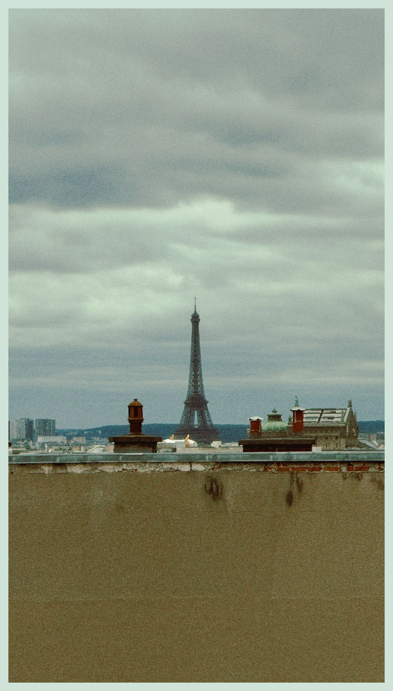
📷 Photo 6.2 — Enchevêtrement de toits (transition vers toit face Tour Eiffel) 🟡 WIP
- Tag : Beauty (background unique non-rejouable)
- Statut : 🟡 WIP — décision Tristan à prendre :
- Option A : compo précise → arrêter Johan à un endroit précis, shoot soigné lumière/rendu
- Option B : shoot continu au 70-200 partout pour multiplier les photos
- Option C (instinct Tristan) : trancher l'angle qu'il préfère + shoot au moment où Johan passe au 35mm
- Note importante : « on pourra pas le refaire 3-4 fois, il faut le shooter à ce moment-là » — pas de rejeu possible
🖼️ Référence 📷
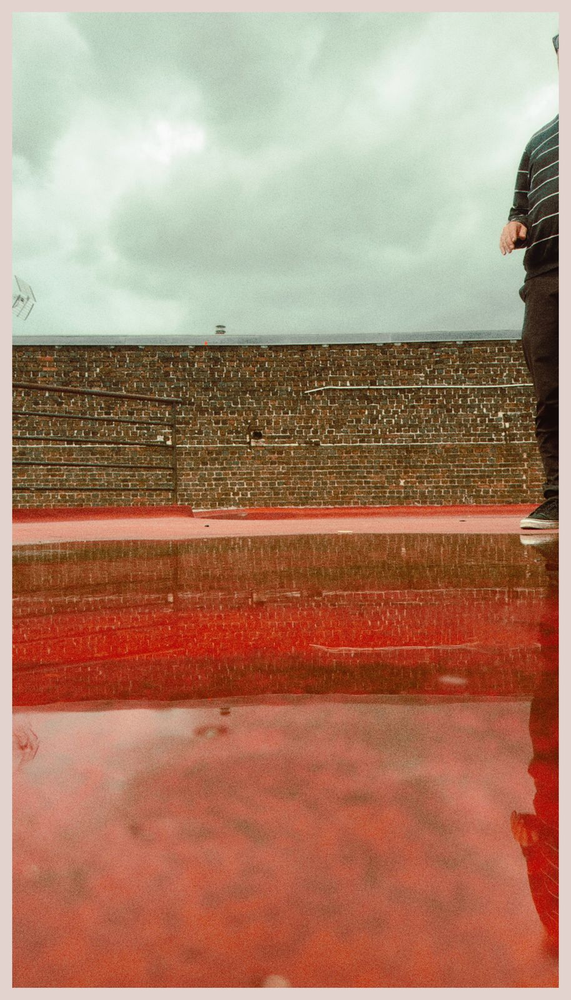
📷 Photo 6.3 — Saut dévers parking → boucle voitures (grand angle)
- Tag : Perf (action saut)
- Statut : ✅ ACTÉE (2 axes)
- Focale : grand angle
- Composition : Johan saute du sommet du toit (parking) → première boucle qui tourne pour faire monter les voitures
- 2 axes différents identifiés
Récap Garage Abbeville = 4-5 photos (1 silhouette télé + 1-2 enchevêtrement + 2 saut grand angle) — Beauty : 3-4 · Perf : 1-2 · Zone grise transverse (toits non légaux Johan)